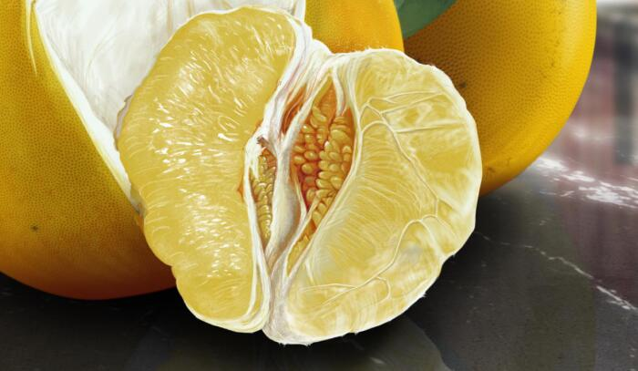
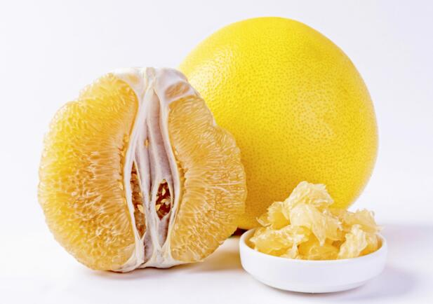

柚子好吃营养用处多，可是这些禁忌也不能忽视
在众多柑橘类水果里，柚子应该是个头最大的那一个，另外它的味道清甜，汁水充沛，入口很是方便，因此吃起来也格外得爽快。柚子另外一个为大家很推崇的点就是它的热量比较低，是减肥时期能达到比较强饱腹感的水果，避免了苦兮兮的饿肚子；加上柚子皮清新的气味，很多人都把它放在窗台上吸收房间里污浊的空气，不要以为柚子皮的作用只有这条，它也是可以食用的！和其他柑橘类水果如橘子、柠檬等类似，柚子皮也具有一定的保健价值，其入茶饮就可缓解头痛，还能缓解伤风感冒，另外近年来风靡的蜂蜜柚子茶中的“柚子”的真身也是柚子皮。
除了蜂蜜柚子茶，港式甜品的“当家花旦”杨枝甘露里，柚子的存在也是整体的点睛之笔。对于内地这一代长大的人，很多人对港式茶餐厅的味蕾启蒙都来自于它，就算现如今来自世界各地层出不穷的甜品都变得唾手可得，杨枝甘露也永远不乏“粉丝”唯它是从。
甜椰奶和奶油芒果汁一起打底，配上爽滑饱满的西米和甜软浓郁的芒果粒，最后靠不苦也不甜的柚子轻微的酸意中和掉一部分甜腻，可以说整个夏季等待着的都是这一刻也不为过了。
柚子皮在家居中除了可以清新空气，吸收有毒气体防蚊虫外，还有清洁脏污的功效。不少妈妈都会把剥下来的柚子皮收集起来，把附着在皮上的白色内囊去除干净，然后将剩余的柚子皮切丝，加入适量清水和食用碱后放入密封罐中冷藏一段时间，等待柚子皮中的香精油充分溶解到清水中，成品对于清理厨房灶台和角落里经年累月沉积下来的油污老垢非常方便有效，几乎是轻轻一擦就恢复光洁如新的本来面目，是否真有传言中这样有效还需要大家的亲自验证，不过理论上看，食用碱对油污就具有一定的分解能力，而柚子皮就算没用，也至少安全无毒了。
这么“多才多艺”的柚子在营养上有哪些优势呢？在食用柚子的时候又有哪些禁忌需要注意？柚子和什么一起吃才能发挥功效呢？
一、柚子的营养成分
柚子的营养成分很高，作为每百克可食用部分仅有42千卡的减肥圣品，柚子的脂肪含量自然不会太高，只占到了0.2％，另一种供能营养素蛋白质比脂肪略高有限，占到了0.8％，宏观营养素里含量最多的碳水化合物也没能达到10％，也就是说，一口柚子下肚，90％都是在补充水分而已，至于说水分这种东西，又怎么会有热量让人长胖呢？柚子果肉中含有较多的维生素和矿物质，其中柑桔属生物类黄酮、芸香素和橙皮素共同构成了在其他种食物中比较少见的维生素P，这种维生素的功能比起直接作用于机体，更多地是防止重要的维生素C被氧化，增强维生素的功能，同时也可以应用于牙龈出血的预防和治疗。
柚子果肉中另一个值得称道的营养成分就是矿物元素中的铬，比起钙铁锌硒一类常提起的微量元素，铬的重要性似乎只有在缺乏它的时候才更受到关注，铬在糖尿病研究方向上的前景被中外医疗行业人士一致看好，铬对于胰岛素抵抗患者的治疗效果很是可观，因此食用柚子有可能能够降低葡萄糖水平的同时提高胰岛素的敏感度，从而控制血糖反应的作用已经得到了充分的实验结果支持，另外，铬对于多囊卵巢综合征的治疗也有很大程度上的辅助作用，这更加说明了铬和胰岛素之间有着千丝万缕的联系。
不过现在对于铬和胰岛素之间的相关性研究还不够深入，很多实验结论出现了偏差和意外，铬在人体胰岛素相关疾病的治疗上还存在着一定的风险；柚子中的一种活性物质柚皮苷也是一种不可多得的“宝贝”，它的挥发性可以降低血液的粘稠度，减轻血液对于血管壁的压力，预防血管破裂或血栓的形成。
柚子中丰富的天然枸橼酸、叶酸等有机酸也可帮助内脏提升代谢能力，还能对抗炎性因子，达到清热去火、止咳化痰的功效；柚子中含量最丰富的维生素C和钙在同类果蔬里都是极为优越的，柚子中维生素C和类黄酮化合物是橙子和柠檬中的两倍之多，抗氧化和抗衰老的能力自然就很容易地超越了其他柑橘类，而钙比常见水果苹果、香蕉的含量都能高出近十倍，听起来就令人十分震撼。

二、柚子的食用禁忌
柚子的营养成分丰富是不假，但这并不意味着它适宜所有人在任何时候食用。严格地说，一个食物如果有效成分的种类和含量越多，那么它的禁忌也会相应跟着呈现出增加的态势。
柚子的食用禁忌主要分类两种，禁忌人群和禁忌情况。
禁忌人群：脾胃虚寒者。这一类人的消化系统颇为脆弱，而柚子，在中医范畴里味甘、酸但属性寒凉，本身脾虚的人消化、吸收能力和运化营养的能力就不太强，胃寒就更加重了易于收到刺激的情况，这类人如果一次进食大量新鲜柚子果肉，很容易引起腹痛腹泻，不过这也并不标志着他们和柚子“有缘无分”，如果控制不住自己少吃一点，还可以用柚子果肉炖甜品饮用，加热的手段可以改善柚子本身的寒性。
肾功能不健全者。柚子中含有大量的钾，对于钾代谢有负担的肾功能不全者请咨询医生后再做决定吃或不吃。

 上一篇
上一篇